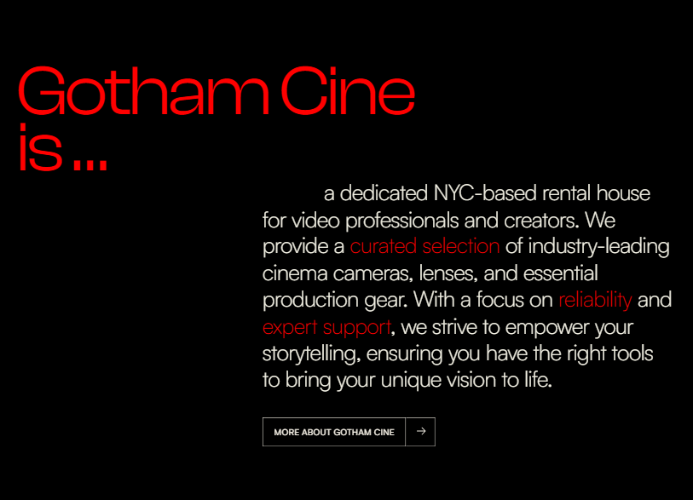

GOTHAM CITE
option 1: gothamcine.framer.website
In the first version, while creating the design, we were more guided by the example you liked, which we sent you at the very beginning along with the logo options. It's a concise design with minimal colors, aiming visually for a monochrome (black-and-white) style, but still with the addition of red and non-monochrome images.
The structure of both versions is more of a brief introduction and presentation of the main sections of the site and services. Since the homepage (HOME) is the first thing a visitor sees, we tried to give it a minimalist, premium look and filled it with content that can quickly familiarize the user with the main functionality and help them better navigate the catalog-style site.
01 HERO & HEADER
Composition Style:
The main composition that greets the website visitor features a large GOTHAM CINE logo, flanked by parallel side texts and a stylized short description below, all displayed over a black-and-white video background. The entire section containing these elements has a color inversion setting, which causes the logo, text, and other elements to automatically adapt to the video's color - switching to the opposite (negative) to maintain readability against light tones (white turns to black/gray and vice versa).
Website Header:
The header contains three main elements that should always be accessible to the user, no matter where they are on the site:
- In the top-left corner, there's the GOTHAM CINE logo, which is clickable and, when pressed, brings the user back.
- Next is the hamburger menu - two clickable lines that expand to reveal the website's navigation menu and display the other main sections of the site (they are not active yet). I'll explain the menu in more detail below.
- And finally, the search icon (a magnifying glass). For now, the search serves a decorative purpose - clicking on it opens an input field and turns the icon red (you can click anywhere outside the field to close the search). This is currently a working version of the search feature, but we haven't focused on it yet. We'll return to it later, if needed, to better adapt it to the website's style.
Initial note: I also want to remind you again that all the texts, information, or images used in the website examples are for demonstration purposes and will need to be replaced in the future. Their main goal now is to give a rough idea of the design.
This part of the website hasn't been fully adjusted yet, so the layout may "shift" on different devices. However, it's already sufficient to evaluate the design. This is a temporary issue that will be fixed later.
02 MENU
Regarding the menu directly in this example site:
- When you click on the hamburger, it is replaced by a cross, but this is not yet fully configured in the working version of the site (via the link you are viewing the site), currently there is just a hamburger when clicked. This is a technical detail that will be fixed later.
- In this version, the menu at the bottom also drops down links to social networks, but in the future these can be replaced with any other links or information.
- Sections are not clickable yet.
About the menu in general in both examples:
1. Menu appearance:
We had several solutions for the menu:
- Firstly, it would be possible to fit all menu sections (home, equipment, crew hire, blog and about) directly into the site header (like Newyorkcitycamera and Greenwoodcine) and possibly add dropdown sliders (like on Greenwood). This solution could be useful because a potential client visiting the site would immediately see all sections of the site. And this could work well if all equipment sections were visible immediately in the header (again, like on nycitycamera), but this harms the visual style and minimalism, as in our case there are quite a few site sections. For example, it still looks appropriate on nycitycamera because they don't have many sections, but in the case of greenwood - it looks unaesthetic and not dynamic: they have two rows of sections, which in our opinion is excessive and visually noisy for the site visitor. This also breaks the premium look, which can harm marketing and the first impression of a potential client.
- In our case, of course, it would be possible to place all menu sections in the site header, but we decided in favor of a premium look and did not want to clutter the visual impression.
- For now, we lean towards making the Equipment section a separate full-fledged section of the site (for example, like on bokehrentals.com) and we did not want to pull its contents into the menu (or site header) so as not to harm the design or confuse the visitor with many different sections at once. We believe that mastering the site should be gradual, and in case of a quick specific request to the site, the client will always have search at hand.
- The Vans section, if you remember, was a separate section in our original site tree, but now we lean towards combining it into the Equipment section or another suitable section.
- In the second version of the site, the menu does not work yet. It exists and somewhat resembles this menu (also opens in a slider), but we have not finished it yet.
All this is our initial opinion and, of course, we would like to hear what you think about the menu and sections in this context. Do you like the hidden menu, or would you prefer everything to be visible immediately in the header? How do you feel about our decision to combine some sections? We await your feedback on this issue.
03 STATISTICS/KEY INDICATORS
Rapid Value Delivery:
Large, easily readable numbers instantly inform the visitor about the scale, experience (even if it's the experience of the team, not the newest company itself) or the quality of the services and equipment offered. This allows for a quick formation of an understanding of GOTHAM CINE's reliability and capabilities.
Building Trust:
Specific numbers, even if they show initial indicators (for example, the quantity of equipment units, represented brands), are perceived as facts and contribute to strengthening trust in the company.
Visual Accent:
This section, designed in a minimalist style with an emphasis on typography, serves as a good visual "anchor" after the dynamic Hero section. It structures information and makes it easily digestible.
Flexibility of Content:
The numbers and captions presented here (Leading Brands Stocked, In-house Gear Experts, Years Team Industry Exp, Rental Items in Catalog) are, of course, demonstrational, but at the launch stage (and further as the company develops) they can be adapted (changed) to emphasize precisely those strengths that are relevant for GOTHAM CINE at the given moment.
Thus, this section is an interesting element for quickly positioning the company and creating a sense of professionalism and scale for the client, while remaining flexible to reflect GOTHAM CINE's actual achievements and features at any stage of development.
04 ABOUT
Key Message:
The text description on the right can concisely convey the company's mission and core values. Here, the specialization in professional equipment, focus on quality (curated selection), reliability (reliability), and expert support (expert support) is emphasized. These highlighted words serve as semantic accents that the user quickly reads. The text is just an example; in the future, it can also be adapted more precisely.
Call to Action:
The "MORE ABOUT GOTHAM CINE" button logically directs the interested user to a more detailed "About Us" page, where more can be told about the company. This avoids overloading the main page with excessive information but provides easy access to the section.
05 BRANDS
Next is a section demonstrating brands whose equipment is available for rent. This can be an important factor for a professional audience. This section performs the following tasks:
1. Positioning Quality and Professionalism, as well as Social Proof (Indirect):
Association with well-known and respected brands indirectly enhances the authority of GOTHAM CINE itself. Clients see that the company works with serious manufacturers. The section does not necessarily have to highlight only top brands (you might not have some), but simply quickly showcase any available brands. Alternatively, the heading can be changed and something else related to the available brands can be devised.
2. Navigational Potential (Opportunity for Development):
In the future, each logo can serve as an interactive element leading to a catalog page filtered by the products of that brand. This will significantly improve navigation for users looking for specific brands.
Using official logos in a monochrome (white) design supports the overall minimalist and aesthetic feel of the site.
06 EQUIPMENT CATEGORY OVERVIEW
Following the general company introduction and brand demonstration, we move on to a visual acquaintance with the key equipment categories available at GOTHAM CINE. This section is designed to:
1. Clearly Present the Assortment:
Instead of a simple text list, we use large visual cards for each main category (CAMERAS, MONITORS & VIDEO, LENSES, LIGHTING, GRIP & SUPPORT). This allows the user to quickly "grasp" the breadth of the offered equipment.
2. Improve Navigation:
Each card serves as a direct link to the corresponding catalog section, simplifying the user's path to finding a specific type of equipment. This is more intuitive than just a menu.
3. Create a Premium Impression:
- Visual Style: The use of high-quality images for each category, where the category name is integrated directly into the image, creates a modern and stylish look. It is important to note that the current images on the cards are demonstrational and will be finalized/replaced with final, more polished visual solutions for each category that match the overall style.
- Informativeness: Relevant tags are placed under each image (e.g., CINEMA, DSLR, FILM CAMERAS, BROADCAST for cameras), which further specify equipment subtypes within the category and can serve for quick orientation or hint at filtering possibilities in the catalog.
- Brief Description: A concise description under the tags gives the user a general idea of what they will find in this section, without overloading with information.
4. Emphasize Expertise:
Carefully selected categories and tags demonstrate that GOTHAM CINE understands the nuances of professional equipment and structures its catalog logically for specialists.
5. Flexibility and Scalability:
Although five main categories are currently presented, the section's structure allows for easy addition or modification in the future as the assortment expands. The section title "Some of our arsenal" also hints that this is just the tip of the iceberg, encouraging exploration of the catalog further.
This section can also play a role in "warming up" the user, transitioning them from a general acquaintance with the brand to specific product categories through such visual cards.
07 ATMOSPHERIC SLIDESHOW
Between the block with equipment categories and the block representing additional services, we integrated a dynamic section that uses the effect of changing images during scrolling. This section pursues several goals:
Creating Atmosphere and Emotional Connection:
After more informative blocks with categories, this section is designed to immerse the user in the world of professional video production. Changing atmospheric images (backstage from filming, cinematic cityscapes, team work) create a mood and evoke associations with the creative process.
Visual "Rest" and Attention Retention:
The dynamics of image changes during scroll serves to retain the user's attention and makes viewing the page less monotonous. This is a kind of visual pause that refreshes perception before the next block of information.
Reinforcing the Key Message:
The central text block, which appears and disappears along with the slideshow, can be used for any purpose. The same applies to the images themselves; these could be your photos from various work processes or something else. Their main task here is not to convey specific information, but to work on the overall impression and aesthetics. Here, informational rest is most important.
Smooth Transition:
This section can also serve as a smooth visual and semantic transition from a detailed review of equipment types to a broader spectrum of services offered by the company. It is also worth clarifying that such a section can be located in another place (perhaps closer to the end of the feed), so as to also have the opportunity to slightly unload the user.
08 ADDITIONAL SERVICES
After getting acquainted with the equipment arsenal, we move on to presenting the spectrum of additional services that GOTHAM CINE offers for comprehensive support of our clients' projects.
Each card uses a thematic background image that corresponds to the service, and a text block with a title and a brief description.
Creating Clear Entry Points:
It is assumed that each card will serve as a clickable element, leading to a separate page or section of the site where this service is described in more detail. This ensures intuitively clear navigation.
Strengthening Brand Positioning:
The very fact of highlighting these services in a separate, well-structured block under the general heading "Complete Your Production" effectively emphasizes GOTHAM CINE's aspiration to be not just an equipment supplier, but a comprehensive partner covering a wide range of production needs. This works for the overall perception of the brand as a reliable and versatile solution.
Photos, text, and the sections themselves are also demonstrational and are again our proposal. The section can be redesigned for other sections and information.
09 TEAM PRESENTATION
Since GOTHAM CINE offers film crew hiring services, it was crucial not just to mention this possibility but also to personalize it by introducing potential clients to key specialists.
1. Service Personalization:
Instead of an abstract "crew hire" offer, we show specific people (or roles) with their specializations. This makes the service more tangible and builds more trust. Using photos (or avatars at the initial stage) and names helps to "humanize" the offer.
2. Visual Structure and Clarity:
Each specialist's card includes their role (e.g., Director of Photography, 1st Assistant Camera, Gaffer) and a brief description of their key skills and experience. The use of a card grid for team presentation ensures good readability and allows for easy comparison of profiles. Each card contains:
- Photo/avatar of the specialist.
- A brief text description of their competencies.
- Name and position.
- An icon symbolizing their specialization (e.g., camera, lens, lighting equipment). This element further enhances visual perception and helps to quickly identify the role.
3. Call to Deeper Exploration:
The "VIEW ALL EXPERTS" button serves as a logical call to action, inviting the user to navigate to a more detailed "Crew Hire" section page, where a full list of available specialists, their detailed resumes, portfolios, and hiring conditions can be presented.
4. Content Scalability:
The heading "Meet Our Core Crew" implies that this is only part of the available professionals, which allows for flexible management of the team's presentation on the main page without overloading it.
We also do not rule out the possibility of doing without names and simply demonstrating a list of various possible experts for hire (if only because employees tend to change over time, or because for some other reasons you want to do without specific names). But even if so, the list can still include key possible experts without names, which can be independently changed over time.
10 BLOG ARTICLE ANNOUNCEMENTS
The blog is a component of the content strategy aimed at providing value to the audience and strengthening expert image. On the start page, we have placed a section with announcements of the latest articles to:
Attract Attention to Content:
Visually highlight several current publications, motivating users to go to the main blog section for a more in-depth study of topics. The blog should have a place on the start page, otherwise, there is a risk that it will simply not be noticed, as users usually come to such catalog sites with a different purpose.
Demonstrate Expertise:
The topics of the articles (for example, as in our demonstration) can show that GOTHAM CINE not only provides equipment but also has knowledge in the field of video production, which it is ready to share.
Each blog article card includes:
- Thematic image.
- Article title (in the empty space between tags and the title, by the way, you can also use part of the text from the article, something similar is in the second version of the site design).
- Tags/Categories and Date: Elements such as "PRODUCTION TIPS", "GEAR REVIEW", "TUTORIAL" and the publication date help the user quickly navigate the type of content and its relevance. They can be hashtags for filtering.
Call to Action:
The "ALL BLOGS" button logically leads to the main blog page, where the full archive of articles is presented.
Section Heading:
The phrase "Learn, create, and be inspired by Our Articles" reflects the blog's goal — not only to inform but also to motivate users to be creative.
This section serves not only to announce content but also to strengthen GOTHAM CINE's authority, as well as to attract and retain the audience by providing useful and interesting information. Another coin in the piggy bank that the user will return to the site.
We also want to note the parallax effect (the effect of depth and a moving camera) that we have given to the demonstration images for this blog section. Such an effect is not necessarily to be used in the blog section for images; it might be more appropriate to do it for other images (for example, for the Equipment sections, the one above, from the “Some of our Arsenal” section). But we left this effect here for now, just to show that there is such a possibility to make dynamic "moving" images.
We also want to say that the Blog section is also being successfully developed by us (The entire Blog page with all articles and their structure). There are already some developments in the design style of this site variant, so if you like this design variation, I will send you the section with the blog for review a little later.
11 FAQ
The FAQ section is without special comments from us. This is a section with a clear function that can help users find quick answers.
In our case, there is an "accordion" animation, where the answer is revealed when the question is clicked. The questions can, of course, be very different, and it will be up to you to see which questions and answers to use in this section. For now, we have filled it with demonstration text that may be far from reality =).
12 FOOTER
The footer is the concluding element of every page of the site and, despite its position, carries an important navigational and informational load. In the design for GOTHAM CINE, we aimed to make it functional, stylish, and consistent with the overall branding:
Central Accent and Call to Action:
Interactive Element (Diaphragm/Logo): The central interactive element in the form of a diaphragm with the inscription "Let's Rent" is animated and shrinks when hovered over with the cursor in the desktop version of the site. This element serves not only as a decorative detail but also as a final, memorable call to action, encouraging the user to start the rental process or interaction.
The possibility of replacing this animation with a more branded one, associated with the "G" logo, was discussed, which could further enhance brand identity, or simply with another.
The footer is designed not just to be the "end of the page," but a useful and informative space that provides the user with necessary links, contacts, and a final stimulus for interaction, while maintaining brand integrity.
13 IMPORTANT CONCLUSION
We aimed to create a design characterized by a dark color palette, accent use of red, clean typography, and an abundance of "air," creating a sense of premium quality. But here's what else can be clarified:
Firstly, colors: here you can reduce the amount of red color and use it even less often, thereby moving to a more monochrome color palette, which will look even more minimalistic.
Fonts: they are also not final yet; further close attention will be paid to them, as this is an important component of the design. Also, within Tilda, the font package will differ from the font package provided in Framer, but we will look for and select the most suitable or solutions you like.
Structure on the main page: It is also not final, as I said, but now we wanted to create a page that can effectively introduce the user to the site, direct them, and help them on the path of exploring content and functionality. After creating the other main sections of the site, we will return to the main page more than once and supplement/change it. In general, of course, it can already be supplemented with missing sections, but we would like to have all the information and have a complete picture to make changes effectively. In any case, in the second version of the site, which we also provided you - the number of sections on the main page is slightly more expanded and, if desired, we could transfer these sections from there to this design (if you like it more), or recreate something similar here. And for now, the existing sections can be swapped, new sections added, unnecessary ones deleted.
Animation, content, and site load: Several interactive elements are presented on the main page: coloring animations, animations related to scrolling the feed, various pop-up elements and parallax effects in the backend itself. There is also a certain amount of video files (both in this and in the second version of the design), some of them are loaded directly into the site, some to third-party services. Filling the site with such animations and videos is a plus for the visual style, but excessive use of this can affect the "weight" of the site and its response. In the conditions of a catalog site, site overload is even more relevant, since in addition to design, we will also have a large number of files related to equipment or a blog. Therefore, we will carefully approach ensuring that the site is not overloaded and works well. Beautiful animations or heavy files such as video are reasonable to use on the start page, since the HOME page is practically the "face" of the site - the first thing the client sees. But in other sections of the site, there will be fewer heavy elements so as not to overload the site with unnecessary weight. By the way, complex animations are not what a catalog primarily needs; functionality and clarity are important there, so further we will create a design that will simply be pleasant for the user to manage, without any unnecessary "wow effects" there. In extreme cases, if it is necessary - we will consider the possibility of connecting a site loading screen, this is a rather pleasant element that can also play in favor of the premium appearance.